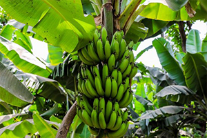
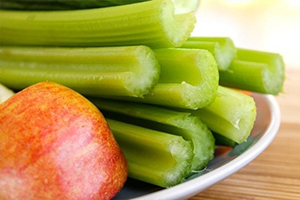
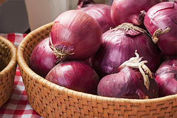
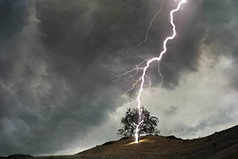
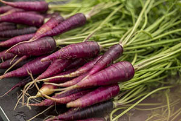

Random fakty
Ostatné
Ľudské telo
História
Botanika
Psychológia
Zoológia

Banány sú zahnuté lebo rastú smerom k slnku
Zeler a jablko majú negatívne kalórie, spálite viac kalórií ich jedením ako z nich dostanete


Keď zjete veľa cibule budete unavený, funguje ako sedatíva
Dub má väčšiu šancu aby do neho udrel blesk ako ostatné stromy


Mrkvy boli oficiálne fialové